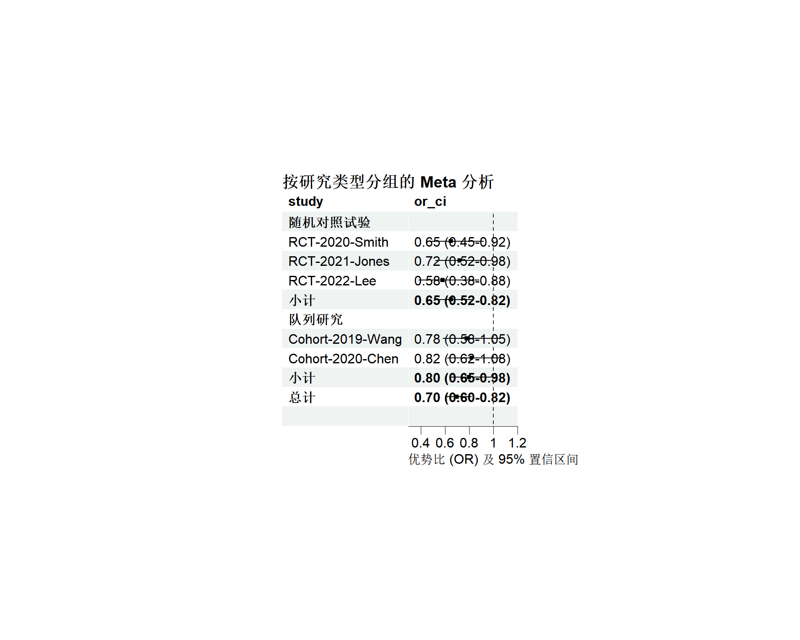
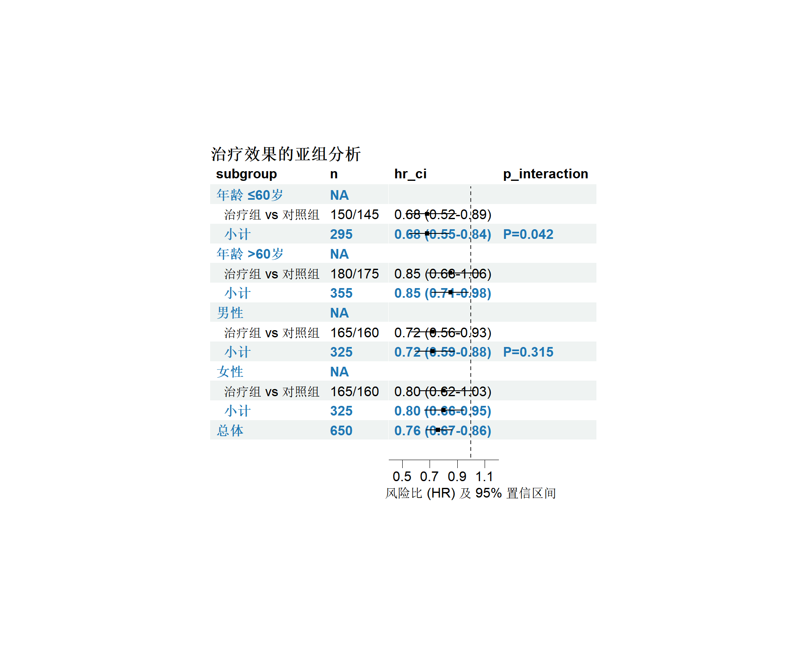
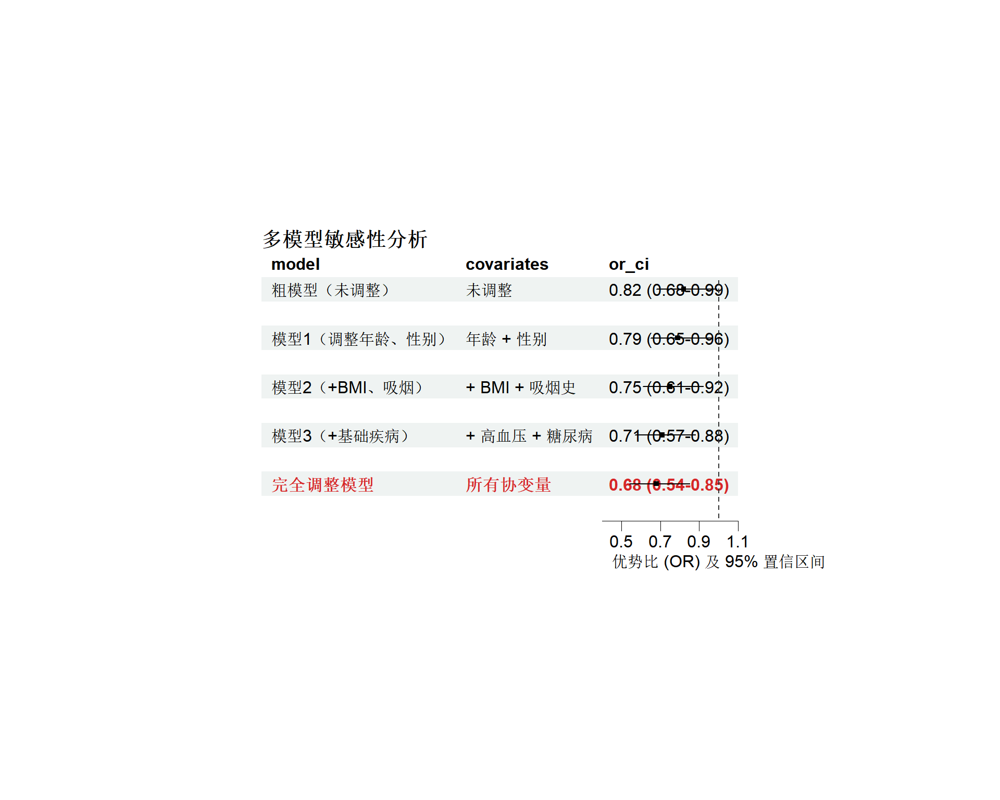
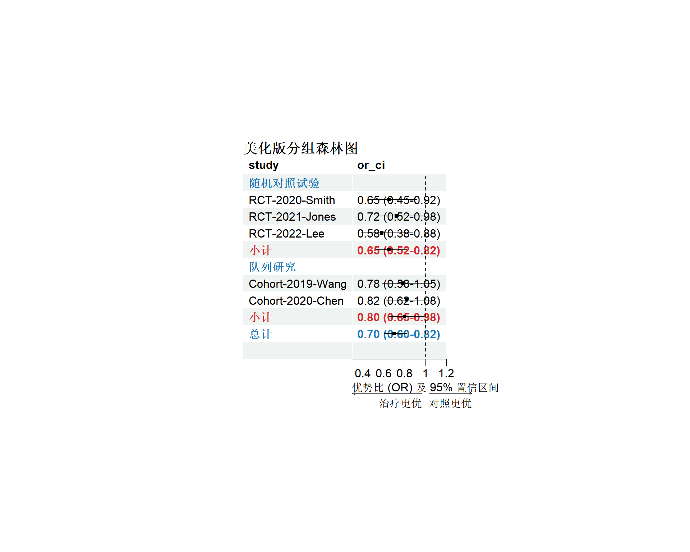
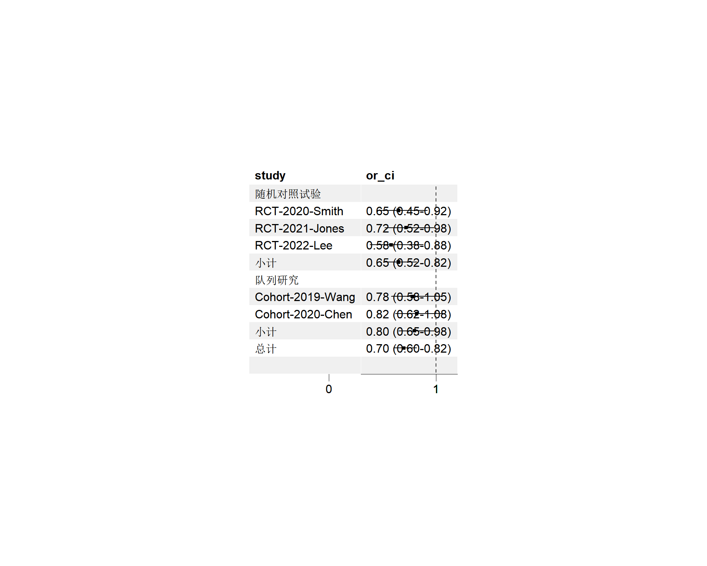

# 安装包（首次使用）
if (!require(forestploter, quietly = TRUE)) {
install.packages("forestploter")
}
# 加载包
library(forestploter)
library(dplyr)
library(tidyr)
library(grid) # forestploter 底层依赖分组森林图：亚组分析与模型对比可视化
数据可视化
专题图
森林图
什么是分组森林图？
定义与应用场景
分组森林图（Grouped Forest Plot）是在传统森林图基础上，通过视觉分组展示多层次效应量的可视化方法。与普通森林图相比，分组森林图能够：
| 特性 | 普通森林图 | 分组森林图 |
|---|---|---|
| 数据结构 | 单一层次的研究 | 多层次/多类别研究 |
| 视觉层次 | 平铺展示 | 分组标题 + 缩进 |
| 适用场景 | 简单 Meta 分析 | 亚组分析、模型对比、分层研究 |
| 信息密度 | 低 | 高 |
典型应用场景
- 亚组分析：按年龄、性别、地区等特征分层展示治疗效果
- 敏感性分析：对比调整不同协变量的模型结果
- Meta 分析分组：按研究类型（RCT/观察性）分组展示
- 多模型对比：同时展示粗模型、调整模型、完全调整模型
- 多结局分析：按不同结局指标（死亡/住院/复发）分组
为什么选择 forestploter 包？
根据实际使用经验（详见 2016-forestplot.rmd），forestploter 包相比 forestplot 包具有：
| 优势 | forestploter | forestplot |
|---|---|---|
| 语法 | 简洁直观 | 复杂（基于 grid/gpar） |
| 分组 | 原生支持 | 不稳定（与 dplyr 冲突） |
| 样式 | 现代化、可扩展 | 老旧、难以调整 |
| 文档 | 清晰完善 | 示例代码常报错 |
安装与加载
数据准备
分组森林图的数据结构
分组森林图的数据框需要包含以下关键列：
# 创建示例数据框展示数据结构
example_structure <- tibble::tibble(
subgroup = c("分组A", "", "", "分组B", ""),
label = c("研究1", "研究2", "小计", "研究3", "小计"),
estimate = c(0.65, 0.72, 0.68, 0.78, 0.78),
lower = c(0.45, 0.52, 0.55, 0.58, 0.62),
upper = c(0.92, 0.98, 0.82, 1.05, 0.98),
is_summary = c(FALSE, FALSE, TRUE, FALSE, TRUE)
)
head(example_structure)# A tibble: 5 × 6
subgroup label estimate lower upper is_summary
<chr> <chr> <dbl> <dbl> <dbl> <lgl>
1 "分组A" 研究1 0.65 0.45 0.92 FALSE
2 "" 研究2 0.72 0.52 0.98 FALSE
3 "" 小计 0.68 0.55 0.82 TRUE
4 "分组B" 研究3 0.78 0.58 1.05 FALSE
5 "" 小计 0.78 0.62 0.98 TRUE 关键字段说明：
| 字段名 | 类型 | 说明 | 必需 |
|---|---|---|---|
subgroup |
字符 | 分组变量（用于视觉分组） | 是 |
label |
字符 | 行标签（研究名称） | 是 |
estimate |
数值 | 点估计值（OR/HR/RR） | 是 |
lower |
数值 | 置信区间下限 | 是 |
upper |
数值 | 置信区间上限 | 是 |
is_summary |
逻辑 | 是否为汇总行 | 否 |
ci |
字符 | 格式化的置信区间文本 | 否 |
手动创建示例数据
# 示例：按研究类型分组的 Meta 分析数据
grouped_data <- tibble::tibble(
# 分组标识
subgroup = c(
"随机对照试验", rep("", 4),
"队列研究", rep("", 3),
"总体", ""
),
# 研究名称
study = c(
"随机对照试验", "RCT-2020-Smith", "RCT-2021-Jones", "RCT-2022-Lee", "小计",
"队列研究", "Cohort-2019-Wang", "Cohort-2020-Chen", "小计",
"总计", ""
),
# 效应量（OR）
estimate = c(
NA, 0.65, 0.72, 0.58, 0.65,
NA, 0.78, 0.82, 0.80,
0.70, NA
),
# 置信区间
lower = c(
NA, 0.45, 0.52, 0.38, 0.52,
NA, 0.58, 0.62, 0.65,
0.60, NA
),
upper = c(
NA, 0.92, 0.98, 0.88, 0.82,
NA, 1.05, 1.08, 0.98,
0.82, NA
),
# 标记汇总行
is_summary = c(
TRUE, FALSE, FALSE, FALSE, TRUE,
TRUE, FALSE, FALSE, TRUE,
TRUE, FALSE
)
)
# 添加格式化文本
grouped_data <- grouped_data %>%
mutate(
# 格式化 OR 和 95%CI
or_ci = ifelse(
!is.na(estimate),
sprintf("%.2f (%.2f-%.2f)", estimate, lower, upper),
""
)
)
print(grouped_data)# A tibble: 11 × 7
subgroup study estimate lower upper is_summary or_ci
<chr> <chr> <dbl> <dbl> <dbl> <lgl> <chr>
1 "随机对照试验" "随机对照试验" NA NA NA TRUE ""
2 "" "RCT-2020-Smith" 0.65 0.45 0.92 FALSE "0.65 (0.4…
3 "" "RCT-2021-Jones" 0.72 0.52 0.98 FALSE "0.72 (0.5…
4 "" "RCT-2022-Lee" 0.58 0.38 0.88 FALSE "0.58 (0.3…
5 "" "小计" 0.65 0.52 0.82 TRUE "0.65 (0.5…
6 "队列研究" "队列研究" NA NA NA TRUE ""
7 "" "Cohort-2019-Wang" 0.78 0.58 1.05 FALSE "0.78 (0.5…
8 "" "Cohort-2020-Chen" 0.82 0.62 1.08 FALSE "0.82 (0.6…
9 "" "小计" 0.8 0.65 0.98 TRUE "0.80 (0.6…
10 "总体" "总计" 0.7 0.6 0.82 TRUE "0.70 (0.6…
11 "" "" NA NA NA FALSE "" 示例1：基础分组森林图
按研究类型分组
# 准备绘图数据（只保留需要展示的列）
plot_data <- grouped_data %>%
select(study, or_ci, estimate, lower, upper, is_summary)
# 绘制基础分组森林图
p1 <- forest(
plot_data[, c("study", "or_ci")], # 左侧文本列
est = plot_data$estimate, # 点估计
lower = plot_data$lower, # CI下限
upper = plot_data$upper, # CI上限
ci_column = 2, # 在第2列绘制森林图
ref_line = 1, # 参考线位置（OR=1）
xlim = c(0.3, 1.2), # X轴范围
ticks_at = c(0.4, 0.6, 0.8, 1.0, 1.2), # 刻度位置
# 标题设置
title = "按研究类型分组的 Meta 分析",
xlab = "优势比 (OR) 及 95% 置信区间"
)
# 修改汇总行样式（粗体）
p1 <- edit_plot(
p1,
row = which(plot_data$is_summary),
gp = gpar(fontface = "bold")
)
plot(p1)
代码解释
forest()核心参数：est/lower/upper：必需的三个数值向量ci_column：在哪一列绘制森林图（从1开始计数）ref_line：无效应线（OR=1, RR=1, HR=1）xlim：X轴显示范围（建议略大于数据范围）ticks_at：自定义刻度位置
edit_plot()样式定制：row：指定要修改的行（向量）gp：grid 图形参数（字体、颜色、线宽等）
示例2：亚组分析森林图
按患者特征分层
# 创建亚组分析数据
subgroup_data <- tibble::tibble(
# 亚组标识
group = c(
"年龄 ≤60岁", rep("", 2),
"年龄 >60岁", rep("", 2),
"男性", rep("", 2),
"女性", rep("", 2),
"总体", ""
),
# 亚组名称
subgroup = c(
"年龄 ≤60岁", " 治疗组 vs 对照组", " 小计",
"年龄 >60岁", " 治疗组 vs 对照组", " 小计",
"男性", " 治疗组 vs 对照组", " 小计",
"女性", " 治疗组 vs 对照组", " 小计",
"总体", ""
),
# 样本量
n = c(
NA, "150/145", "295",
NA, "180/175", "355",
NA, "165/160", "325",
NA, "165/160", "325",
"650", ""
),
# 效应量
hr = c(
NA, 0.68, 0.68,
NA, 0.85, 0.85,
NA, 0.72, 0.72,
NA, 0.80, 0.80,
0.76, NA
),
lower = c(
NA, 0.52, 0.55,
NA, 0.68, 0.71,
NA, 0.56, 0.59,
NA, 0.62, 0.66,
0.67, NA
),
upper = c(
NA, 0.89, 0.84,
NA, 1.06, 0.98,
NA, 0.93, 0.88,
NA, 1.03, 0.95,
0.86, NA
),
# P值（交互作用）
p_interaction = c(
"", "", "P=0.042",
"", "", "",
"", "", "P=0.315",
"", "", "",
"", ""
),
# 标记
is_summary = c(
TRUE, FALSE, TRUE,
TRUE, FALSE, TRUE,
TRUE, FALSE, TRUE,
TRUE, FALSE, TRUE,
TRUE, FALSE
)
)
# 添加格式化文本
subgroup_data <- subgroup_data %>%
mutate(
hr_ci = ifelse(
!is.na(hr),
sprintf("%.2f (%.2f-%.2f)", hr, lower, upper),
""
)
)
# 绘制亚组森林图
plot_data2 <- subgroup_data %>%
select(subgroup, n, hr_ci, p_interaction, hr, lower, upper, is_summary)
p2 <- forest(
plot_data2[, c("subgroup", "n", "hr_ci", "p_interaction")],
est = plot_data2$hr,
lower = plot_data2$lower,
upper = plot_data2$upper,
ci_column = 3, # 在"HR (95%CI)"列后绘图
ref_line = 1,
xlim = c(0.4, 1.2),
ticks_at = c(0.5, 0.7, 0.9, 1.1),
title = "治疗效果的亚组分析",
xlab = "风险比 (HR) 及 95% 置信区间"
)
# 定制样式
p2 <- edit_plot(
p2,
row = which(plot_data2$is_summary),
gp = gpar(fontface = "bold", col = "#1f77b4")
)
plot(p2)
解读亚组森林图
关键点：
- P for Interaction：
- P=0.042（年龄）→ 年龄存在显著的效果修饰
- P=0.315（性别）→ 性别无显著效果修饰
- 临床意义：
- 年龄≤60岁患者从治疗中获益更多（HR=0.68）
- 年龄>60岁患者获益较小（HR=0.85，CI跨1）
- 缩进：使用
" "空格创建视觉层次
示例3：多模型对比森林图
调整不同协变量的模型
# 创建模型对比数据
model_data <- tibble::tibble(
# 模型名称
model = c(
"粗模型（未调整）", "",
"模型1（调整年龄、性别）", "",
"模型2（+BMI、吸烟）", "",
"模型3（+基础疾病）", "",
"完全调整模型", ""
),
# 协变量说明
covariates = c(
"未调整", "",
"年龄 + 性别", "",
"+ BMI + 吸烟史", "",
"+ 高血压 + 糖尿病", "",
"所有协变量", ""
),
# 效应量
or = c(
0.82, NA,
0.79, NA,
0.75, NA,
0.71, NA,
0.68, NA
),
lower = c(
0.68, NA,
0.65, NA,
0.61, NA,
0.57, NA,
0.54, NA
),
upper = c(
0.99, NA,
0.96, NA,
0.92, NA,
0.88, NA,
0.85, NA
),
# 标记主要模型
is_main = c(
FALSE, FALSE,
FALSE, FALSE,
FALSE, FALSE,
FALSE, FALSE,
TRUE, FALSE
)
)
# 格式化
model_data <- model_data %>%
mutate(
or_ci = ifelse(!is.na(or), sprintf("%.2f (%.2f-%.2f)", or, lower, upper), "")
)
# 绘制模型对比图
plot_data3 <- model_data %>%
select(model, covariates, or_ci, or, lower, upper, is_main)
p3 <- forest(
plot_data3[, c("model", "covariates", "or_ci")],
est = plot_data3$or,
lower = plot_data3$lower,
upper = plot_data3$upper,
ci_column = 3,
ref_line = 1,
xlim = c(0.4, 1.1),
ticks_at = c(0.5, 0.7, 0.9, 1.1),
title = "多模型敏感性分析",
xlab = "优势比 (OR) 及 95% 置信区间"
)
# 高亮完全调整模型
p3 <- edit_plot(
p3,
row = which(plot_data3$is_main),
gp = gpar(fontface = "bold", col = "#d62728")
)
plot(p3)
模型对比的解读策略
- 趋势观察：
- OR从0.82逐步降至0.68，说明混杂因素被控制后效应增强
- 所有模型的CI均不跨1，结果稳健
- 模型选择：
- 完全调整模型是主要分析（加粗红色）
- 其他模型用于敏感性分析
- 临床意义：
- 即使调整所有协变量，治疗仍有保护作用（OR=0.68）
样式美化
自定义颜色与字体
# 创建彩色分组数据
color_data <- grouped_data %>%
select(study, or_ci, estimate, lower, upper, is_summary)
# 绘制图形
p4 <- forest(
color_data[, c("study", "or_ci")],
est = color_data$estimate,
lower = color_data$lower,
upper = color_data$upper,
ci_column = 2,
ref_line = 1,
xlim = c(0.3, 1.2),
ticks_at = c(0.4, 0.6, 0.8, 1.0, 1.2),
title = "美化版分组森林图",
xlab = "优势比 (OR) 及 95% 置信区间",
# 自定义图形参数
arrow_lab = c("治疗更优", "对照更优"), # 箭头标签
x_trans = "none", # 不进行对数转换（如需对数坐标用"log"）
# 置信区间样式
sizes = 0.4 # 点的大小
)
# 分组标题行（蓝色粗体）
p4 <- edit_plot(
p4,
row = c(1, 6, 10),
gp = gpar(fontface = "bold", col = "#1f77b4", fontsize = 12)
)
# 汇总行（红色加粗）
p4 <- edit_plot(
p4,
row = c(5, 9),
gp = gpar(fontface = "bold", col = "#d62728")
)
plot(p4)
高级样式参数
| 参数 | 功能 | 示例值 |
|---|---|---|
sizes |
点/图形大小 | 0.3（小）、0.5（中）、0.8（大） |
x_trans |
X轴变换 | "log"（对数）、"none"（线性） |
arrow_lab |
箭头标签 | c("左标签", "右标签") |
col |
CI颜色 | 支持十六进制或R颜色名 |
添加分组背景色
# 使用 theme 参数添加背景
p5 <- forest(
color_data[, c("study", "or_ci")],
est = color_data$estimate,
lower = color_data$lower,
upper = color_data$upper,
ci_column = 2,
ref_line = 1,
xlim = c(0.3, 1.2),
# 添加背景色（奇偶行）
theme = forest_theme(
core = list(bg_params = list(fill = c("#f0f0f0", "white")))
)
)
plot(p5)
常见错误与解决方案
错误1：CI溢出绘图区域
问题：置信区间过宽，部分数据点显示不全
# 错误示例（xlim 太窄）
forest(data, xlim = c(0.5, 1.5)) # 如果upper=2.0会溢出解决方案：
# 1. 检查数据范围
range(data$lower, data$upper, na.rm = TRUE)
# 2. 设置合适的xlim（留10-20%余量）
forest(data, xlim = c(0.3, 2.2))
# 3. 或使用对数坐标
forest(data, x_trans = "log", xlim = c(0.1, 10))错误2：分组标签不清晰
问题：分组标题与数据行难以区分
解决方案：
# 1. 使用粗体 + 颜色区分
edit_plot(p, row = c(1, 5, 10), gp = gpar(fontface = "bold", col = "blue"))
# 2. 添加空行分隔
data <- data %>%
add_row(study = "", .before = 6) # 在第6行前插入空行
# 3. 使用背景色
forest(data, theme = forest_theme(core = list(bg_params = list(fill = c("#e0e0e0", "white")))))错误3：颜色过多导致混乱
问题：为每个亚组使用不同颜色，视觉过载
最佳实践：
# ❌ 不推荐：5种颜色
colors <- c("red", "blue", "green", "orange", "purple")
# ✅ 推荐：2-3种颜色分层
# - 分组标题：蓝色
# - 汇总行：红色
# - 普通行：黑色（默认）
edit_plot(p, row = title_rows, gp = gpar(col = "#1f77b4", fontface = "bold"))
edit_plot(p, row = summary_rows, gp = gpar(col = "#d62728", fontface = "bold"))错误4：图例与文本重叠
问题：当列数过多时，森林图与左侧文本重叠
解决方案：
# 调整ci_column位置（森林图绘制在更右侧的列）
forest(
data[, c("col1", "col2", "col3", "col4")],
ci_column = 4 # 在第4列绘图，留足左侧文本空间
)进阶：交互式分组森林图
使用 plotly 实现交互
# 安装 plotly
if (!require(plotly, quietly = TRUE)) {
install.packages("plotly")
}
library(plotly)
# 准备数据（转为长格式）
interactive_data <- subgroup_data %>%
filter(!is.na(hr)) %>%
mutate(
# 添加悬停文本
hover_text = paste0(
"亚组: ", subgroup, "\n",
"样本量: ", n, "\n",
"HR: ", sprintf("%.2f", hr), "\n",
"95%CI: ", sprintf("%.2f-%.2f", lower, upper)
)
)
# 创建交互式森林图
fig <- plot_ly(
interactive_data,
x = ~hr,
y = ~reorder(subgroup, hr),
error_x = list(
type = "data",
symmetric = FALSE,
array = ~(upper - hr),
arrayminus = ~(hr - lower)
),
type = "scatter",
mode = "markers",
marker = list(size = 10, color = "#1f77b4"),
text = ~hover_text,
hoverinfo = "text"
) %>%
layout(
title = "交互式亚组分析森林图",
xaxis = list(title = "风险比 (HR)", range = c(0.4, 1.2)),
yaxis = list(title = ""),
shapes = list(
# 添加参考线
list(
type = "line",
x0 = 1, x1 = 1,
y0 = 0, y1 = 1,
yref = "paper",
line = list(color = "red", dash = "dash")
)
)
)
fig交互功能说明
- 悬停提示：显示详细数值
- 缩放：双击重置，滚轮缩放
- 选择：框选或套索工具
- 导出：右上角下载为PNG
最佳实践总结
数据准备清单
图形设计原则
| 原则 | 说明 | 示例 |
|---|---|---|
| 简洁优先 | 避免过多颜色和字体 | 最多3种颜色 |
| 对齐一致 | 数值右对齐，文本左对齐 | 使用 sprintf() |
| 留白充足 | xlim 留10-20%余量 | xlim = c(0.3, 1.2) 而非 c(0.5, 1.1) |
| 标题清晰 | 标注 OR/HR/RR 和参考组 | “治疗 vs 对照的 OR” |
| 交互检验 | 亚组分析必须报告 P for Interaction | 在表格中添加列 |
报告规范
根据 PRISMA 指南，分组森林图应包含：
- 图表标题：明确分组依据和效应量类型
- X轴标签：注明效应量及单位
- 参考线：标注无效应线（OR=1）
- 样本量：每个亚组的n
- 统计量：点估计 + 95%CI + P值
- 交互检验：P for Interaction（亚组分析必需）
- 图例：说明符号和颜色含义
小结
核心要点
- forestploter 包优势：
- 语法简洁，易于分组
- 原生支持多列文本 + 森林图组合
- 样式定制灵活
- 分组策略：
- 使用空行或缩进创建层次
- 用颜色和字体区分标题/汇总行
- 避免过度设计
- 常见应用：
- 亚组分析（必须报告交互P值）
- 敏感性分析（多模型对比）
- Meta分析分层
延伸阅读
参考资源
下一步：尝试使用你自己的 Meta 分析或亚组分析数据，绘制专业的分组森林图！